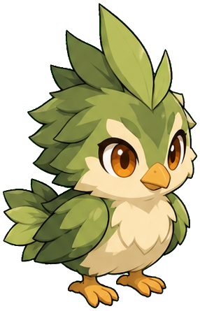
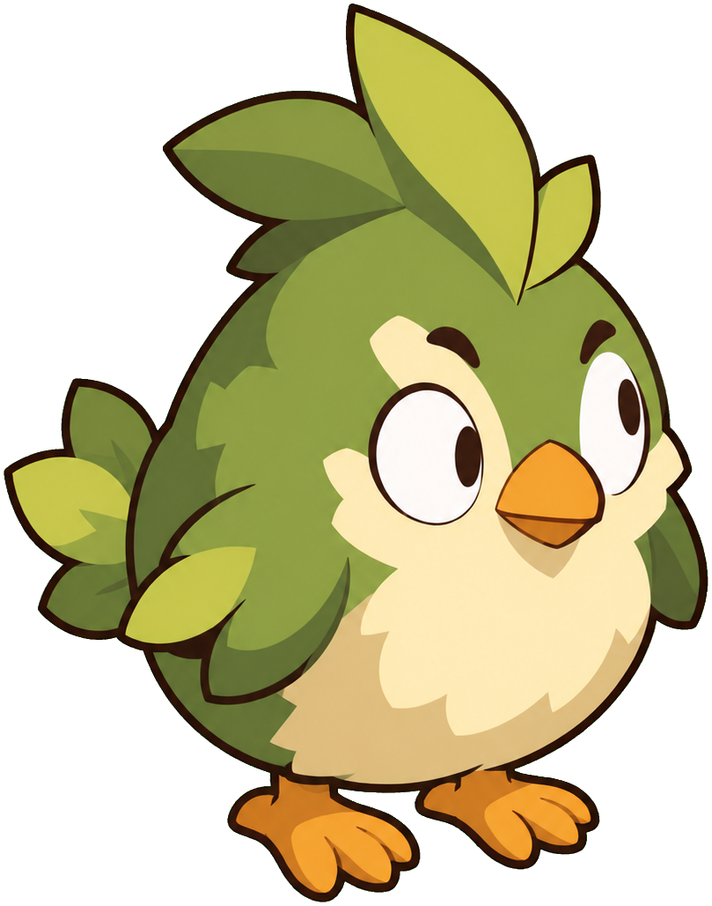
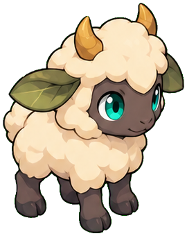
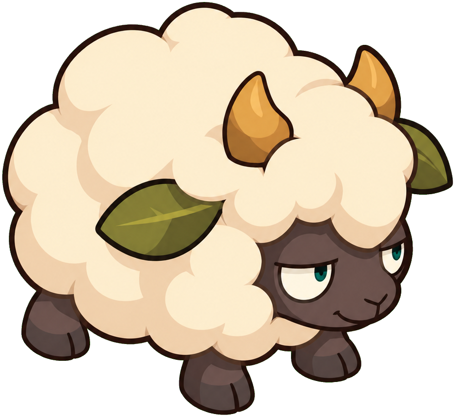

ÉTUDE DU BESTIAIRE · 16 OCTOBRE 2026
Plus rond. Plus expressif.
Deux propositions pour rapprocher le bestiaire du dessin des Bouftous et des Tofus : grandes masses, expressions cartoon et couleurs en aplats.
01 / PLUMETS
Plumet des mousses
Un corps en boule, une petite huppe souple et un regard malicieux.


02 / BOURLAINES
Bourlaine jeune
Une grosse masse de laine, des pattes courtes et un air obstiné.

